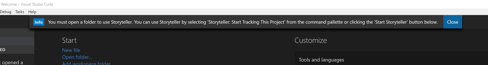
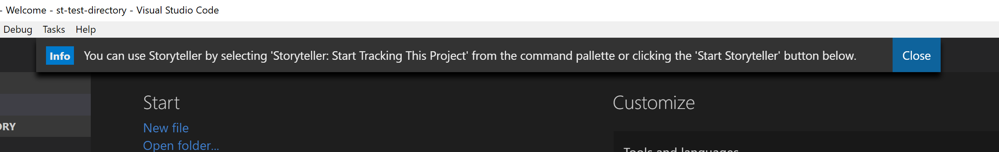
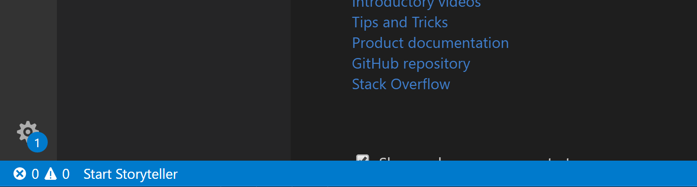
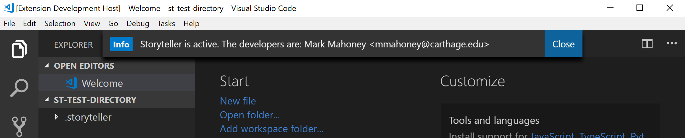

Starting Storyteller

Storyteller will track the changes in a single open directory. Tracking changes can be turned on and off at any time as long as there is an open directory is VS Code.
Whenever VS Code is started with the Storyteller plugin and a directory is NOT open a warning message like the one above will be displayed. If the user is not interested in using Storyteller this warning can be dismissed and no changes will be tracked.
Tip: An open directory is required because Storyteller stores all of the changes it
records in a special directory called .storyteller. The open directory is where this special one will be stored.
To open a directory in VS Code go to the File menu and select Open a Folder...
Creating a new project
To start a brand new project:
- Create a new directory on the file system. This will become the Storyteller 'project' directory.
- Using VS Code, open the new directory
(File -> Open Folder...). -
Opening the directory alone does not begin tracking. A user must explicitly start the recording process.

There are two ways to do this:
-
Open VS Code's command pallette (
ctrl/cmd + shift + p) and type in "Storyteller: Start Tracking This Project".
-
Click the "Start Storyteller" button in the status bar on the bottom left corner in VS Code (this will only be present if the plugin is installed).

-
-
With the user's permission to start tracking changes Storyteller is now active and all changes inside the project directory will be tracked. Storyteller attributes all changes to one or more developers. Storyteller will prompt for the first developer's information. Enter in a name and email (or hit 'escape' to remain anonymous). All changes will be attributed to this 'active' developer. More developers can be added at any time. Look here for more information.

- Begin writing code like you normally would. Storyteller is working in the background. A new directory,
.storyteller, will be created in the Storyteller project directory to hold the changes. You should not edit anything in this special directory.
Starting from an existing project

If Storyteller has tracked a directory in the past there will be a hidden directory named .storyteller that holds the
project's historical data. Whenever a directory is opened (using VS Code and the Storyteller plugin) that has this special sub-directory,
Storyteller automatically continues to track changes in the directory. There is no need to log in again. On subsequent startups, VS Code
opens the last used folder by default so working over multiple programming sessions is automatic. A message will be displayed that shows
the current active developer.
Stop tracking changes

The user can stop Storyteller from tracking changes by opening the command pallette and typing in "Storyteller: Stop Tracking This Project". No new data will be recorded after that point.
Later, if the user would like to start tracking changes again they can open the command pallette and type in "Storyteller: Start Tracking This Project" or hit the "Start Storyteller" button in the status bar. The system will reconcile the changes since stopping when it is started up again.
Tip: If at anytime a user would like to delete the entire recorded Storyteller history all they have to
do is delete the .storyteller directory.
File Reconciliation
On start up, Storyteller will reconcile any changes made to the file system outside of VS Code. If one or more files or directories are added outside of VS Code they will be added to the Storyteller data in one large block with a single timestamp. A diff is run against each existing file on start up to check for changes made outside of VS Code. If any changes are found then they will be added to the Storyteller data in a single block with a single timestamp.
If any files or directories are removed outside of VS Code, Storyteller will prompt to see if the user wants to add them back. If so, the existing Storyteller data will be used to recreate them on the file system. This prevents accidental deletion or deletions by other tools.